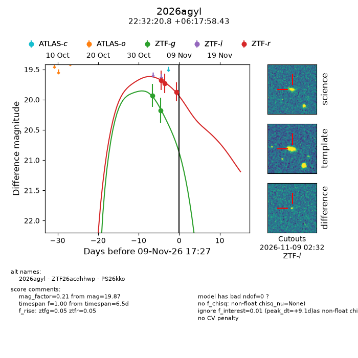
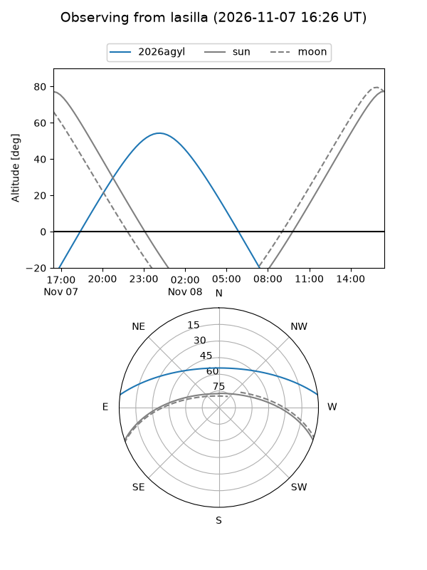
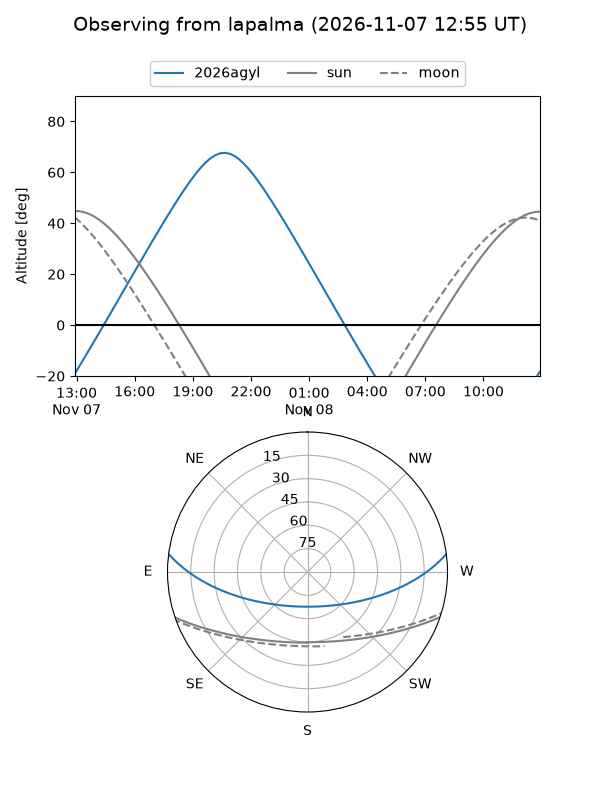
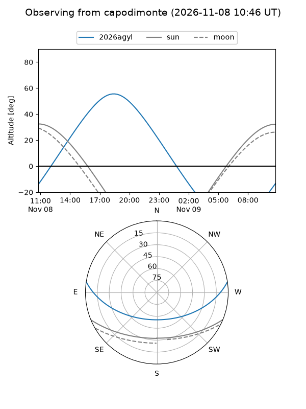
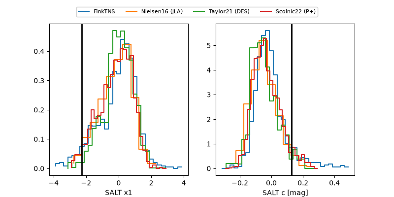

2026agyl
Target 2026agyl at 2026-11-09 17:31
Aliases and brokers:
FINK-ZTF: ztf.fink-portal.org/ZTF26acdhhwp
Lasair-ZTF: lasair-ztf.lsst.ac.uk/objects/ZTF26acdhhwp
ALeRCE-ZTF: alerce.online/object/ZTF26acdhhwp
YSE-PZ: ziggy.ucolick.org/yse/transient_detail/2026agyl
TNS name: wis-tns.org/object/2026agyl
Direct TNS query: direct search
alt names
ZTF26acdhhwp (ztf,fink_ztf)
2026agyl (tns,yse)
PS26kko (panstarrs)
Coordinates:
equatorial (ra, dec) = 338.0865,+6.29956
equatorial (HMS+DMS) = 22:32:20.76,+06:17:58.43
galactic (l, b) = (72.5908,-42.57889)
Flags:
peak dt: +9.1
Photometry:
last ztfg=20.18, ztfr=19.87
2 ztfg, 3 ztfr detections
Lightcurve

Visibility



Additional plots
